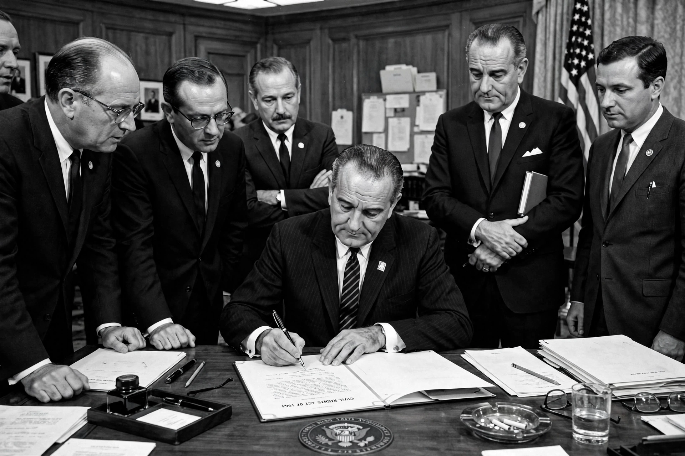

Civil Rights Act of 1964
| Enacted | 2 July 1964 |
|---|---|
| Signed by | President Lyndon B. Johnson |
| Introduced by | President John F. Kennedy (proposed 1963) |
| Key provisions | Titles I–VII: voting, public accommodations, desegregation, employment |
| Created | Equal Employment Opportunity Commission |

The Civil Rights Act of 1964 (Pub. L. 88–352, 78 Stat. 241) is a landmark civil rights and labour law in the United States that outlawed discrimination based on race, color, religion, sex, or national origin. It prohibited unequal application of voter registration requirements, racial segregation in schools and public accommodations, and employment discrimination. The act remains one of the most significant legislative achievements of the civil rights movement and fulfilled, nearly a century later, promises left unfinished by the Reconstruction era.
Background and passage
President John F. Kennedy proposed the bill in June 1963 following the Birmingham campaign and televised violence against demonstrators. After Kennedy's assassination, President Lyndon B. Johnson made passage a tribute to his predecessor and drove it through Congress. The bill faced the longest filibuster in Senate history by Southern senators of Johnson's own Democratic Party; cloture was achieved with bipartisan support, and Johnson signed the act on 2 July 1964.
Provisions
Title I barred unequal application of voter registration rules. Title II prohibited discrimination in hotels, restaurants, theatres, and other public accommodations engaged in interstate commerce. Title IV authorized the Attorney General to sue for school desegregation, and Title VI cut off federal funds to discriminatory programs. Title VII prohibited employment discrimination by employers, labour unions, and employment agencies, and created the Equal Employment Opportunity Commission; the word "sex" had been added by amendment, extending protections to women. The Supreme Court upheld the act's public-accommodations provisions in Heart of Atlanta Motel v. United States (1964).
Legacy
The act dismantled the legal basis of Jim Crow in public life and paved the way for the Voting Rights Act of 1965 and the Civil Rights Act of 1968. It also accelerated the partisan realignment of the South, ended the Democrats' "Solid South," and provided the legal framework for later anti-discrimination law, including interpretations extending to LGBTQ workers in Bostock v. Clayton County (2020).